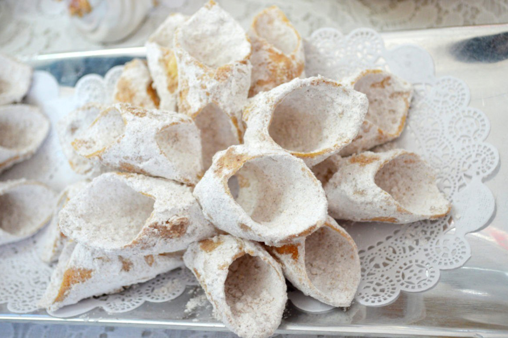

TUMBAGÓN

SU ORIGEN ES FRANCÉS Y ES UNA APORTACIÓN DE LOS FRAILES SAN BERNARDO DE COSÍN Y JUAN DE SAN MIGUEL, ALLÁ POR EL AÑO DE 1542 CUANDO LLEGARON A EVANGELIZAR A ESTAS TIERRAS.
SU NOMBRE PROVIENE DE LAS LÁMINAS DE ORO EN FORMA DE TUMBAGA QUE USABAN LOS RELIGIOSOS COMO ANILLO Y SON HECHOS A BASE DE TRIGO, ANÍS, NARANJA AGRIA, AZÚCAR GLASS Y CANELA.